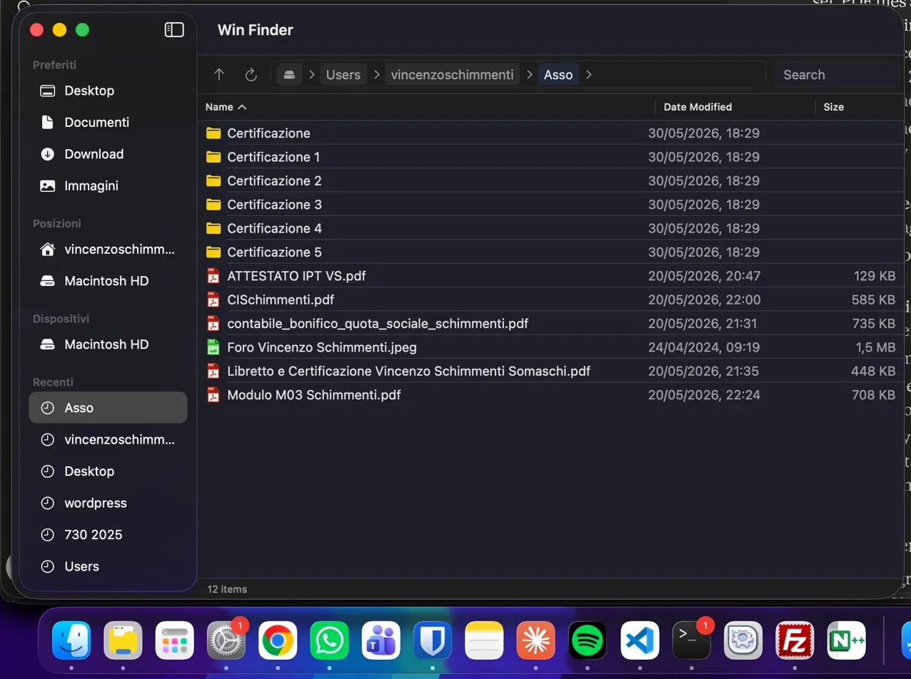

A native file manager for Mac that feels like home — for anyone who switched from Windows.
Free and open source · MIT License · Build from source or download DMG

Always visible, 80% of the toolbar. Click it, type a path, press Enter. Exactly like Windows Explorer.
Each folder is a clickable token. Click > to see subfolders. Click empty space to edit the path directly.
Searches all subfolders by default. Supports wildcards like *.pdf and doc*.
404 file type icons. PDFs are red, ZIPs purple, Swift files orange — just like Windows.
New File, New Folder, Compress to ZIP, AirDrop, Rename, Delete — all where you'd expect them.
Delete moves to Trash. Shift+Delete permanently deletes. Cmd+C / Cmd+V copy and paste files.
Add custom actions to the right-click menu via JSON files. Nested submenus, custom icons, context filtering.
English, Italian, German, Spanish, Simplified Chinese, and Malagasy ❤️. Follows your system language.
Any app can add actions to Win Finder's right-click menu — no SDK, no approval process. Just a JSON file.